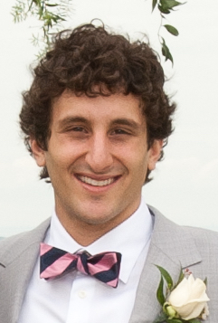

Recent demonstrations of racial and gender bias in the United States have drawn public attention to stereotyping and discrimination in American society and its institutions. However, stereotyping and prejudice are only two examples of how our perceptual biases impact behavior. Confirmation bias, bias in media coverage of events and preferential attachment are all examples of perceptual biases that shape social processes like the creation of echo chambers and discriminatory behaviors. The emergence of social media as a prominent medium for human communication has the potential to provide a new lens for studying the relationship between perceptual biases and social processes, and the role social media plays in affecting this relationship.
The goal of this workshop is to bring together those interested in studying how social media systems and perceptual biases co-evolve, and to write a position paper that outlines what existing research has shown and where new research could improve our understanding. We purposely leave the definition of perceptual bias broad, as the way a person (or institution) constructs its reality. We do so in order to address a variety of possible biases, from those that impact hiring practices of social media companies to those that play a role in social interaction.
PBSM'17 is a half-day ICWSM workshop and will be held on May 15th, 2017 in Montreal, CA before the conference begins.
Questions? Comments? Email us at pbsm2017@gmail.com and/or follow us on Twitter @pbsm2017
The outcome of this workshop will be a position paper that frames research on social media systems and perceptual bias with respect to four themes and research questions:
We seek a listing and categorization of the types of perceptual biases that impact, or are impacted by, social media systems. We are interested in perceptual biases at the individual level (e.g. expectation violations, stereotypes, homophily, confirmation bias etc.), group level (e.g. groupthink, social desirability, in-group favoritism, naive realism, etc.), system-level (e.g. algorithmic bias, hiring biases) and beyond.
We would like to examine perceptual biases from three different directions: how biases shape behavior on social media, how the behavior of others as reflected on social media shape our biases, and what the role of social systems in impacting this relationship is. For example, confirmation bias makes people seek out and follow information sources that confirm their beliefs, which, in turn, leads recommendation systems to recommend similar articles to their friends and furthers the construction of echo chambers. This theme calls for both empirical examples of the mechanisms behind perceptual biases and theoretical characterizations of such processes.
The wide adoption of social media presents new opportunities for measuring existing biases, their formation, the underlying forces behind them. However, the methodologies for studying perceptual biases through social media data are still commencing. On the one hand, traditional research methods such as surveys or randomized experiments that have been the gold standard for measuring these biases are criticized for issues with reproducibility, ability generalize, and interference with the biases being measured (e.g. social desirability biases). On the other hand, methods that use large observational datasets are often shadowed by issues of representativeness, incomplete measurement, and applicability to other systems. Therefore, topics of interest include (but are not limited to): methodologies for measuring biases of individuals online, techniques for quantifying how biases impact online behavior, cautionary notes about using online data to measure particular forms of perception, and social theory that might benefit the construction of computational models.
Not all perceptual biases should be targeted for reduction (positivity bias, for example), nor are all perceptual biases equally susceptible to change. The first part of this theme considers what kinds of perceptual biases we might be interested in reducing (e.g. intergroup favoritism) and how susceptible they actually are to change (e.g. research suggests that certain "sacred values" are almost impervious to change). However, for those biases that technology can and should be designed to reduce, there are important open questions about how best to progress. Existing work or future projects aimed at this goal are of interest.
We seek submissions that will contribute to the creation of the final position paper with respect to the above themes. All submissions should be less than a page and should contain two parts:
Please sent your submissions to pbsm2017@gmail.com. The deadline for submissions is March 8th Friday, March 24th at 8PM EST. The final position paper will be published in a venue chosen by workshop participants, and everyone who makes a submission and attends the workshop will be invited as a contributing author to the position paper.
1:30-1:40: Introduction - Introduce the organizers and provide an outline of the workshop's activities.
1:40-2:00: Meet workshop participants - Allow all participants to introduce themselves, their research interests and their interests in the topic of the workshop.
2:00-2:40: Keynote 1 - Dr. Alice Marwick
2:40-3:15: Break-out groups: Participants will organize into groups of 3-4 people and discuss the various perceptual biases raised by workshop submissions, determining which they think are the most important.
3:15-3:30: Discussion of group results and collective decision on which biases to include in the paper.
4:00-4:40: Keynote 2 - Dr. Christo Wilson
4:40-5:15: Break-out groups: Participants will organize into different groups of 3-4 people and discuss Questions 2-4 with a focus on perceptual biases of particular importance.
5:15-5:30: Discussion and conclusions - Including determining a path for finalization of the position paper and submission details.
Nir Grinberg is a Research Fellow at the Harvard Institute for Quantitative Social Science jointly with the Lazer Lab at the Network Science Institute of Northeastern University. In his research, he combines machine learning, natural language processing and statistical methods to learn about human behavior in the real-world using large-scale datasets. The principle goal of his research is to influence system design to enable people to allocate their attention more efficiently and effectively. His dissertation focused on computational methods in the study of individuals' attention online, for example to digital news or social media. He completed his PhD in Computer Science at Cornell University, advised by Prof. Mor Naaman, as part of the Jacobs Institute at Cornell Tech. He interned at Facebook (x2), Yahoo! Labs, SocialFlow, and Bloomberg. He holds a MS in Computer Science from Rutgers University and a double major B.Sc. in Physics and Computer Science from Tel-Aviv University.
 Kenny Joseph is a postdoc at the Network Science Institute at Northeastern University and a fellow at Harvard’s Institute for Quantitative Social Science. He completed his graduate work in the Societal Computing program in the School of Computer Science at Carnegie Mellon University, where his dissertation focused on the development of new methods for the large-scale study of stereotype and prejudice. In general, his research focuses on developing a better understanding of the dynamics and cognitive representations of stereotypes and prejudice, and their interrelationships with sociocultural structure. Kenny's work has been published in a variety of outlets, including KDD, ICWSM, WWW, CSCW and the Journal of Mathematical Sociology.
Brooke Foucault Welles is an Assistant Professor in the department of Communication Studies and a faculty affiliate of the Network Science Institute and NULab for Texts, Maps and Networks at Northeastern University. Dr. Foucault Welles studies how social networks shape and constrain human behavior, with a particular emphasis on how the recall and activation of network ties influences success in personal and team goals. In the past, Dr. Foucault Welles has examined how social networks influence friendship selection in online communities. More recently, her work focuses on how people come to recognize resources within their social networks and leverage them to achieve personal, organizational and social goals. Prior to joining the faculty at Northeastern University, Dr. Foucault Welles earned her Ph.D. from the department of Communication Studies at Northwestern University. She also holds BA and MS degrees in Communication Studies and Information Science from Cornell University.